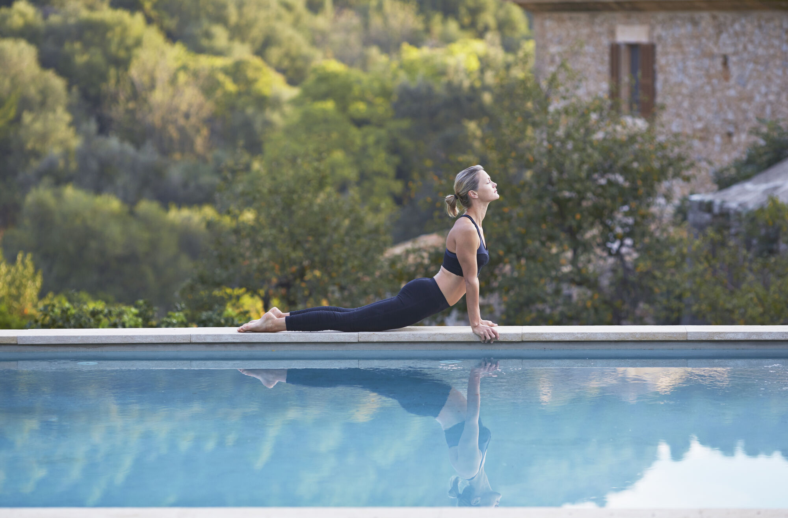
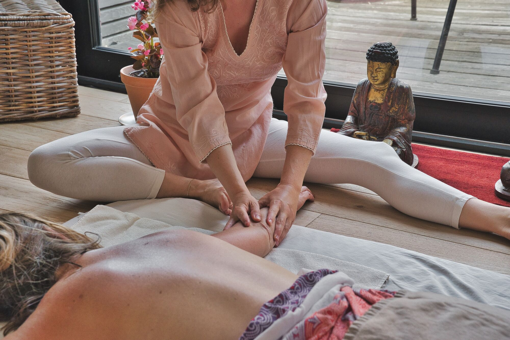
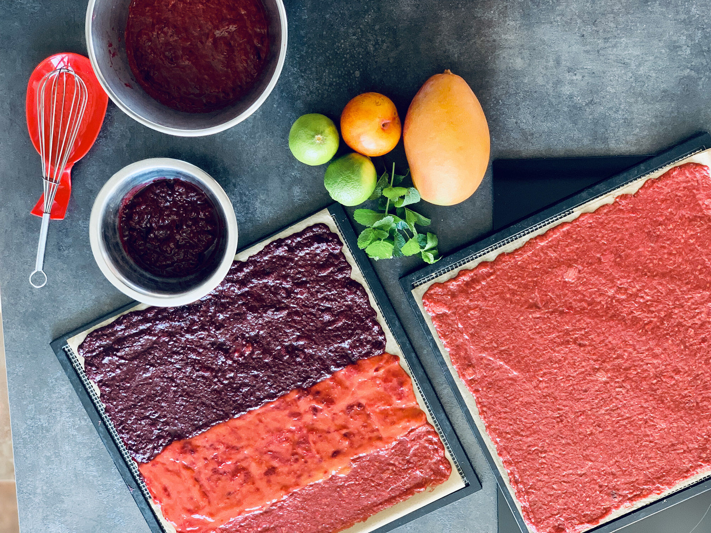

Les Piafs des Collines
Les Piafs des CollinesAteliers
Expérience découverte ou atelier de pratique régulière
Le temps d'une initiation ou d'une pratique plus régulière, nous vous proposons des ateliers au choix pour ponctuer vos vacances de découvertes...
Pensez à réserver à l'avance

Yoga · Sophrologie · Méditation
Les vacances, c'est l'occasion de prendre soin de soi et pourquoi pas de tester de nouvelles pratiques.
Que vous soyez novices ou bien confirmé, profitez d'une séance privée au bord de la piscine, dans un cadre paisible et agréable avec un professeur certifié.
Forfait à partir de 120€
Pensez à réserver à l'avance

Massage détente
Une ou un masseur certifié se déplace avec sa table de massage pour vous offrir une vraie parenthèse détente, pour profiter au maximum de vos vacances.
Vous avez la possibilité de vous faire masser au bord de la piscine ou bien sur la terrasse de l'appartement.
À partir de 120€ le massage
Pensez à réserver à l'avance

Atelier Cuisine
Pour cette expérience gustative autour de la culture niçoise, Serge se fera un plaisir de vous partager son art de la cuisine en vous faisant découvrir les spécialités locales, socca, pissaladière, beignets de fleurs de courgettes, farcis niçois et beaucoup d'autres...
Possibilité de thématiser l'atelier en fonction de vos envies.
Une fois terminé, passez à la phase dégustation au bord de la piscine accompagnée d'une bouteille de vin de Bellet.
Forfait sur demande
Pensez à réserver à l'avance
Jongle & Bulles
Marcelle, pleine de surprise, vous emmènera, jeunes et moins jeunes, dans l'univers du Cirque, de la jongle et des bulles. Vous retrouverez votre âme d'enfant pour le plus grand plaisir de chacun.
Laissez-vous guider par la maîtresse de maison, elle connaît le chemin vers le Pays des Merveilles ;)
Pensez à réserver à l'avance